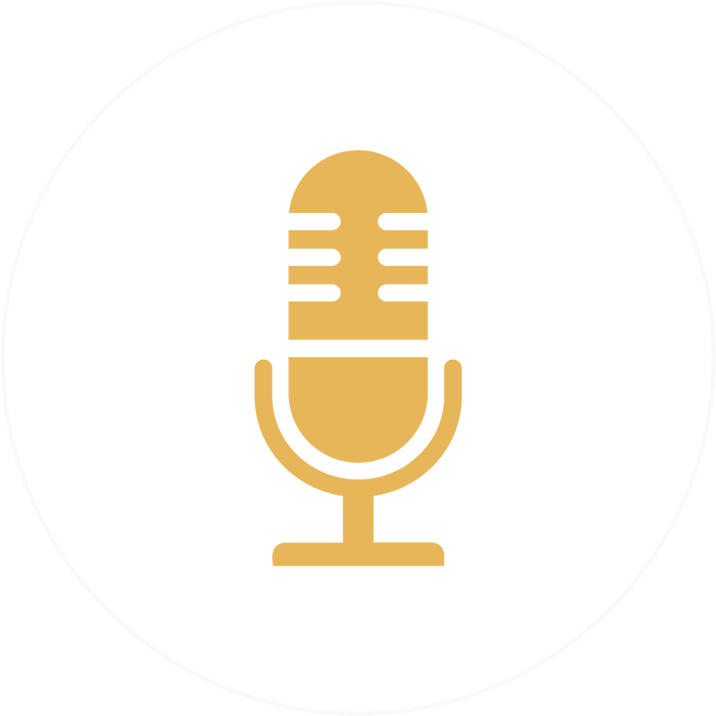

Development 研發
AI 輔助外掛開發
我們投入 AI 技術與動畫製作流程整合，開發具創意與效率的外掛工具，目前應用於：
- After Effects 製作流程
- Blender 動畫製作
- 腳本開發及概念圖輔助應用

原創 Podcast 節目
團隊企劃並製作文化類原創 Podcast，透過訪談與觀察挖掘故事：
- 影視及文化創意產業觀察
- 職涯經驗談
- 社會趨勢觀察
我們投入 AI 技術與動畫製作流程整合，開發具創意與效率的外掛工具，目前應用於：
團隊企劃並製作文化類原創 Podcast，透過訪談與觀察挖掘故事：